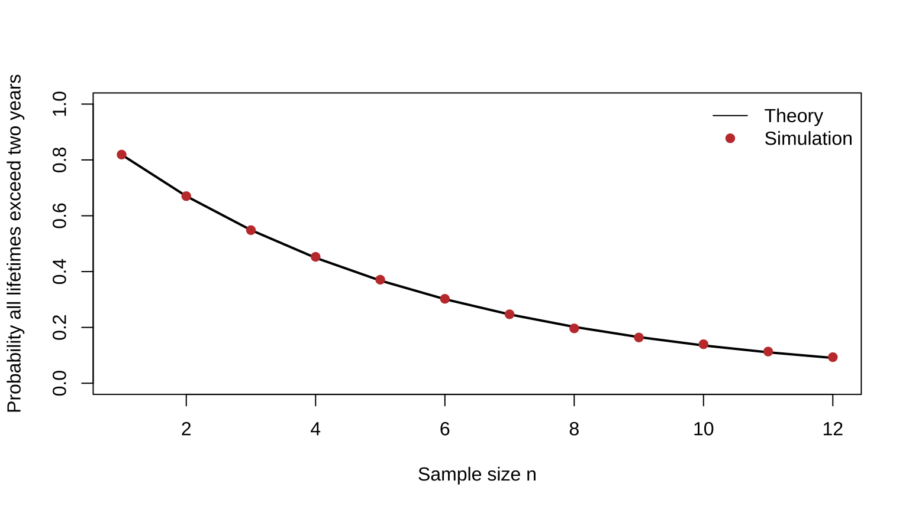
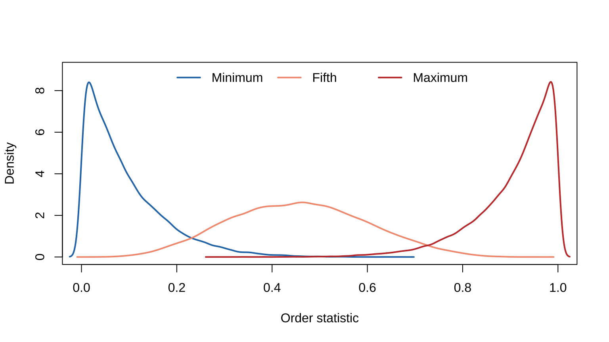
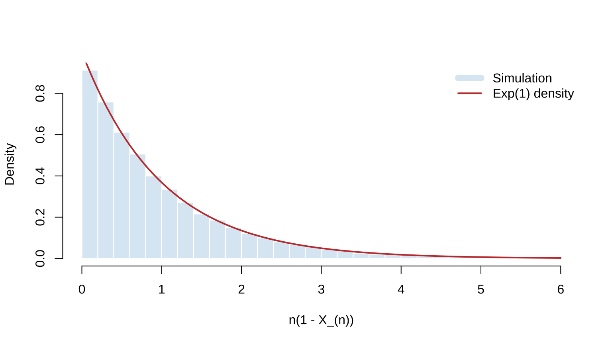

Chapter 5 Properties of a Random Sample
This chapter corresponds to chap-5.tex, its four LaTeX fragments, and chapter-5.md. It covers random sampling, sampling distributions, order statistics, convergence, the CLT, Slutsky’s theorem, and the delta method. The truncated draft ending is completed with the same iid calculation; source corrections are documented in migration_notes.md.
5.1 The random-sample model
Definition 5.1 Mutually independent random variables \(X_1,\ldots,X_n\) having the same pmf or pdf \(f(x)\) form a random sample of size \(n\) from population \(f\). They are independent and identically distributed (iid).
Independence gives
\[f(x_1,\ldots,x_n)=\prod_{i=1}^nf(x_i).\]
For a parametric family \(f(x\mid\theta)\), the same unknown parameter occurs in every factor:
\[f(x_1,\ldots,x_n\mid\theta)=\prod_{i=1}^nf(x_i\mid\theta).\]
The random-sample model is also called sampling from an infinite population. For a finite population, sampling with replacement satisfies the iid conditions. Observations drawn without replacement are dependent, although the iid model is often a useful approximation when the population size \(N\) is much larger than the sample size \(n\).
Example 5.1.3 (Finite-population approximation). Draw 10 numbers without replacement from the finite population \(\{1,\ldots,1000\}\). Find the probability that all 10 exceed 200, and compare the iid approximation with the exact probability.
View detailed solution
If the ten draws are temporarily treated as independent, the probability of exceeding 200 on one draw is \(800/1000\), so
\[ P_{\mathrm{iid}}=\left(\frac{800}{1000}\right)^{10}=0.107374. \]
For the exact calculation, let \(Y\) count sampled values above 200. Then \(Y\sim\operatorname{Hypergeometric}(N=1000,M=800,K=10)\), and
\[ P(Y=10)=\frac{\binom{800}{10}\binom{200}{0}}{\binom{1000}{10}} =0.106164. \]
The difference is about \(0.00121\). Because \(n/N=0.01\) is small, the iid approximation is reasonable, but it is not the exact without-replacement model.
5.2 Exponential circuit-board lifetimes
Example 5.1 Example 5.1.2 (Sample pdf—exponential).
Let \(X_1,\ldots,X_n\) come from an exponential population with scale \(\beta>0\). If \(X_i\) is the lifetime of the \(i\)th identical circuit board, then
\[ f(\mathbf x\mid\beta)=\prod_{i=1}^n\frac1\beta e^{-x_i/\beta} =\frac1{\beta^n}\exp\left(-\frac{\sum_i x_i}{\beta}\right),\qquad x_i>0. \]
Find the probability that every board lasts more than two years.
View detailed solution
First integrate the joint density directly:
\[ \begin{aligned} P(X_1>2,\ldots,X_n>2) &=\int_2^\infty\cdots\int_2^\infty\prod_{i=1}^n\frac1\beta e^{-x_i/\beta}\,d\mathbf x\\ &=(e^{-2/\beta})^n=e^{-2n/\beta}. \end{aligned} \]
Equivalently, iid sampling gives \(P(\cap_i\{X_i>2\})=\prod_iP(X_i>2)=e^{-2n/\beta}\). This is near one when the average lifetime \(\beta\) is large relative to \(n\).
set.seed(5201)
beta <- 10
n_grid <- 1:12
theory <- exp(-2 * n_grid / beta)
simulation <- vapply(n_grid, function(n) {
x <- matrix(rexp(30000 * n, rate = 1 / beta), ncol = n)
mean(apply(x, 1, min) > 2)
}, numeric(1))
plot(n_grid, theory, type = "l", lwd = 2, ylim = c(0, 1),
xlab = "Sample size n", ylab = "Probability all lifetimes exceed two years")
points(n_grid, simulation, pch = 19, col = "#C43C39")
legend("topright", c("Theory", "Simulation"), lty = c(1, NA), pch = c(NA, 19),
col = c("black", "#C43C39"), bty = "n")
Figure 5.1: Theoretical and simulated probabilities that every board lasts more than two years
5.3 Statistics, sample mean, and sample variance
Definition 5.2 For a random sample \(X_1,\ldots,X_n\), a real- or vector-valued function \(Y=T(X_1,\ldots,X_n)\) is a statistic. Its probability distribution is its sampling distribution.
\[ \bar X=\frac1n\sum_{i=1}^nX_i,\qquad S^2=\frac1{n-1}\sum_{i=1}^n(X_i-\bar X)^2,\qquad S=\sqrt{S^2}. \]
Theorem 5.2.4 (Sum-of-squares identity). For any real numbers \(x_1,\ldots,x_n\), with \(\bar x=n^{-1}\sum_i x_i\),
\[ \sum_{i=1}^n(x_i-a)^2 =\sum_{i=1}^n(x_i-\bar x)^2+n(\bar x-a)^2. \]
Thus the sum of squared deviations is minimized at \(a=\bar x\), and
\[ (n-1)s^2=\sum_{i=1}^n(x_i-\bar x)^2 =\sum_{i=1}^nx_i^2-n\bar x^2. \]
Expand proof
Add and subtract \(\bar x\) in every term:
\[ \begin{aligned} \sum_{i=1}^n(x_i-a)^2 &=\sum_{i=1}^n\{(x_i-\bar x)+(\bar x-a)\}^2\\ &=\sum_{i=1}^n(x_i-\bar x)^2 +2(\bar x-a)\sum_{i=1}^n(x_i-\bar x) +n(\bar x-a)^2. \end{aligned} \]
Because \(\sum_i(x_i-\bar x)=0\), the cross term vanishes. Only the last term depends on \(a\), so the minimum occurs at \(a=\bar x\). Setting \(a=0\) and rearranging gives \(\sum_i(x_i-\bar x)^2=\sum_i x_i^2-n\bar x^2\).
Lemma 5.2.5 (Mean and variance of an iid sum). If \(E\{g(X_1)\}\) and \(\operatorname{Var}\{g(X_1)\}\) exist, then
\[ E\left\{\sum_{i=1}^ng(X_i)\right\}=nE\{g(X_1)\},\qquad \operatorname{Var}\left\{\sum_{i=1}^ng(X_i)\right\} =n\operatorname{Var}\{g(X_1)\}. \]
Expand proof
The expectation statement uses only identical distributions and linearity:
\[ E\left\{\sum_i g(X_i)\right\}=\sum_iE\{g(X_i)\} =nE\{g(X_1)\}. \]
The variance statement also uses independence. Expanding the square of the centered sum gives \(n\) diagonal terms, each equal to \(\operatorname{Var}\{g(X_1)\}\), while for \(i\ne j\) every cross term has expectation
\[ E([g(X_i)-Eg(X_i)][g(X_j)-Eg(X_j)])=0. \]
Hence the variance is \(n\operatorname{Var}\{g(X_1)\}\).
Theorem 5.1 Theorem 5.2.6 (Sample mean and sample variance). If \(X_1,\ldots,X_n\) are iid, \(E(X_i)=\mu\), and \(\operatorname{Var}(X_i)=\sigma^2<\infty\), then
\[E(\bar X)=\mu,\quad \operatorname{Var}(\bar X)=\sigma^2/n, \quad E(S^2)=\sigma^2.\]
Expand proof
Lemma 5.2.5 gives
\[ E(\bar X)=\frac1n\sum_iE(X_i)=\mu, \qquad \operatorname{Var}(\bar X)=\frac1{n^2}\sum_i\operatorname{Var}(X_i) =\frac{\sigma^2}{n}. \]
Theorem 5.2.4 gives
\[ (n-1)S^2=\sum_iX_i^2-n\bar X^2. \]
Now \(E(X_i^2)=\sigma^2+\mu^2\) and \(E(\bar X^2)=\operatorname{Var}(\bar X)+[E(\bar X)]^2 =\sigma^2/n+\mu^2\), so
\[ \begin{aligned} (n-1)E(S^2) &=n(\sigma^2+\mu^2) -n\left(\frac{\sigma^2}{n}+\mu^2\right)\\ &=(n-1)\sigma^2. \end{aligned} \]
Dividing by \(n-1\) yields \(E(S^2)=\sigma^2\). This also explains the denominator \(n-1\): it makes \(S^2\) unbiased for the population variance.
With the additional assumption of normality, \(\bar X\sim N(\mu,\sigma^2/n)\); the next section identifies this distribution directly from its MGF.
5.4 MGF of the sample mean and the normal example
Theorem 5.2 Theorem 5.2.7 (MGF of the sample mean).
If the population MGF is \(M_X(t)\), then \(M_{\bar X}(t)=[M_X(t/n)]^n\).
Proof.
Expand proof
Independence yields
\[M_{\bar X}(t)=E\prod_{i=1}^ne^{tX_i/n} =\prod_{i=1}^nE(e^{tX_i/n})=[M_X(t/n)]^n.\]
Example 5.2.8 (Distribution of the normal sample mean). If the population is \(N(\mu,\sigma^2)\), find the distribution of \(\bar X\).
View detailed solution
For a \(N(\mu,\sigma^2)\) population,
\[ M_{\bar X}(t)=\left[\exp\left(\mu\frac tn+\frac{\sigma^2(t/n)^2}{2}\right)\right]^n =\exp\left(\mu t+\frac{(\sigma^2/n)t^2}{2}\right), \]
so \(\bar X\sim N(\mu,\sigma^2/n)\).
The same method shows that if \(X_i\overset{\mathrm{iid}}\sim \operatorname{Gamma}(\alpha,\beta)\) under the shape-scale parameterization, then \(\sum_iX_i\sim\operatorname{Gamma}(n\alpha,\beta)\) and \(\bar X\sim\operatorname{Gamma}(n\alpha,\beta/n)\).
5.5 The convolution formula
Theorem 5.3 Theorem 5.2.9 (Convolution formula).
For independent continuous random variables \(X,Y\), the density of \(Z=X+Y\) is
\[f_Z(z)=\int_{-\infty}^{\infty}f_X(x)f_Y(z-x)\,dx.\]
Proof.
Expand proof
Set \(Z=X+Y,W=X\). The inverse is \(X=W,Y=Z-W\), with absolute Jacobian one. Thus \(f_{Z,W}(z,w)=f_X(w)f_Y(z-w)\); integrating out \(w\) proves the result.
Example 5.2.10 (Sum of Cauchy variables). If \(U\sim\operatorname{Cauchy}(0,\sigma)\) and \(V\sim\operatorname{Cauchy}(0,\tau)\) are independent, then \(U+V\sim\operatorname{Cauchy}(0,\sigma+\tau)\). Consequently, the mean \(\bar X\) of an iid standard Cauchy sample is again standard Cauchy.
View derivation
The convolution formula gives
\[ f_{U+V}(z)=\int_{-\infty}^{\infty} \frac{\sigma}{\pi(\sigma^2+u^2)} \frac{\tau}{\pi\{\tau^2+(z-u)^2\}}\,du. \]
The textbook assigns the partial-fraction and antiderivative calculation to Exercise 5.7. Its result is
\[ f_{U+V}(z)=\frac{\sigma+\tau} {\pi\{(\sigma+\tau)^2+z^2\}}, \]
so scales add. Repeated application gives \(\sum_{i=1}^nX_i\sim\operatorname{Cauchy}(0,n)\); dividing by \(n\) yields \(\bar X\sim\operatorname{Cauchy}(0,1)\). Thus, when the population variance does not exist, dispersion of the sample mean need not shrink with \(n\).
5.6 Sampling properties of the normal distribution
Theorem 5.3.1 (Normal sample mean and variance). If \(X_1,\ldots,X_n\overset{\mathrm{iid}}\sim N(\mu,\sigma^2)\), then
- \(\bar X\) and \(S^2\) are independent;
- \(\bar X\sim N(\mu,\sigma^2/n)\);
- \((n-1)S^2/\sigma^2\sim\chi^2_{n-1}\).
Expand proof
Standardize with \(Z_i=(X_i-\mu)/\sigma\), so it is enough to prove the result for \(\mu=0\) and \(\sigma=1\). Part 2 was already established in Example 5.2.8.
For independence, set \(Y_1=\bar X\) and \(Y_i=X_i-\bar X\) for \(i=2,\ldots,n\). The statistic \(S^2\) depends only on \((Y_2,\ldots,Y_n)\), while under this linear transformation the normal joint density factors into one term involving \(Y_1\) and another involving the residual vector. Hence \(Y_1=\bar X\) is independent of the residual vector, and therefore of \(S^2\).
For the chi-squared result, follow the textbook recursion. Let \(\bar X_k,S_k^2\) denote the mean and variance of the first \(k\) observations. The sum-of-squares identity gives
\[ kS_{k+1}^2=(k-1)S_k^2+ \frac{k}{k+1}(X_{k+1}-\bar X_k)^2. \]
For \(k=1\), \(S_2^2=(X_2-X_1)^2/2\sim\chi_1^2\). Assume \((k-1)S_k^2\sim\chi_{k-1}^2\). Since \(X_{k+1}-\bar X_k\sim N(0,(k+1)/k)\),
\[ \frac{k}{k+1}(X_{k+1}-\bar X_k)^2\sim\chi_1^2. \]
This variable is independent of \(S_k^2\), so independent chi-squared variables add and their degrees of freedom add. Hence \(kS_{k+1}^2\sim\chi_k^2\). Induction completes the standard-normal case; restoring scale gives \((n-1)S^2/\sigma^2\sim\chi_{n-1}^2\).
5.7 Student t and Snedecor F sampling distributions
Definition 5.3 Definition 5.3.4 (Student’s \(t\) distribution).
If \(X_i\overset{\mathrm{iid}}\sim N(\mu,\sigma^2)\), then
\[T=\frac{\bar X-\mu}{S/\sqrt n}\sim t_{n-1}.\]
The general \(t_p\) density is
\[f_T(t)=\frac{\Gamma((p+1)/2)}{\Gamma(p/2)\sqrt{p\pi}} \left(1+\frac{t^2}{p}\right)^{-(p+1)/2},\quad t\in\mathbb R.\]
Definition 5.4 Definition 5.3.6 (Snedecor’s \(F\) distribution).
For two independent normal random samples,
\[F=\frac{S_X^2/\sigma_X^2}{S_Y^2/\sigma_Y^2}\sim F_{n-1,m-1}.\]
The \(F_{p,q}\) density is
\[ f_F(x)=\frac{\Gamma((p+q)/2)}{\Gamma(p/2)\Gamma(q/2)} \left(\frac pq\right)^{p/2}\frac{x^{p/2-1}}{[1+(p/q)x]^{(p+q)/2}},\quad x>0. \]
5.8 Discrete order statistics
Definition 5.5 Definition 5.4.1 (Order statistics).
The ordered sample \(X_{(1)}\le\cdots\le X_{(n)}\) consists of the order statistics. In particular, \(X_{(1)}=\min_iX_i\) and \(X_{(n)}=\max_iX_i\).
Theorem 5.4.3 (Discrete order statistics).
Let a discrete population have values \(x_1<x_2<\cdots\), with \(P(X=x_i)=p_i\), and write \(P_i=\sum_{r=1}^ip_r\), \(P_0=0\). Then
\[P(X_{(j)}\le x_i)=\sum_{k=j}^n\binom nkP_i^k(1-P_i)^{n-k},\]
\[ P(X_{(j)}=x_i)=\sum_{k=j}^n\binom nk \{P_i^k(1-P_i)^{n-k}-P_{i-1}^k(1-P_{i-1})^{n-k}\}. \]
Expand proof
Let \(Y=\sum_{r=1}^nI(X_r\le x_i)\). Then \(Y\sim\operatorname{Bin}(n,P_i)\) and \(\{X_{(j)}\le x_i\}\iff\{Y\ge j\}\). Therefore
\[ P(X_{(j)}\le x_i)=P(Y\ge j) =\sum_{k=j}^n\binom nkP_i^k(1-P_i)^{n-k}. \]
Because the support points are ordered,
\[ \begin{aligned} P(X_{(j)}=x_i) &=P(X_{(j)}\le x_i)-P(X_{(j)}<x_i)\\ &=P(X_{(j)}\le x_i)-P(X_{(j)}\le x_{i-1}). \end{aligned} \]
Apply the first formula with \(P_i\) and \(P_{i-1}\) to obtain the result.
5.9 Continuous order statistics
Theorem 5.4 Theorem 5.4.4 (Continuous order statistic).
For population cdf \(F_X\) and pdf \(f_X\),
\[ f_{X_{(j)}}(x)=\frac{n!}{(j-1)!(n-j)!}f_X(x)[F_X(x)]^{j-1}[1-F_X(x)]^{n-j}. \]
Expand proof
For a small \(dx>0\), the event \(x<X_{(j)}\le x+dx\) requires exactly \(j-1\) observations at or below \(x\), one in \((x,x+dx]\), and the remaining \(n-j\) above \(x+dx\). There are \(n!/\{(j-1)!1!(n-j)!\}\) assignments, so
\[ \begin{aligned} P(x<X_{(j)}\le x+dx) &=\frac{n!}{(j-1)!(n-j)!}[F_X(x)]^{j-1}\\ &\quad\times\{F_X(x+dx)-F_X(x)\} [1-F_X(x+dx)]^{n-j}. \end{aligned} \]
Divide by \(dx\) and let \(dx\downarrow0\). Since \(\{F_X(x+dx)-F_X(x)\}/dx\to f_X(x)\), the stated density follows.
Example 5.4.5 (Uniform order-statistic pdf). If \(X_i\overset{\mathrm{iid}}\sim U(0,1)\), find the density and distribution of \(X_{(j)}\).
View detailed solution
On \(0<x<1\), \(F_X(x)=x\) and \(f_X(x)=1\). Theorem 5.4.4 gives
\[ f_{X_{(j)}}(x)=\frac{n!}{(j-1)!(n-j)!} x^{j-1}(1-x)^{n-j}. \]
Since \(B(j,n-j+1)=(j-1)!(n-j)!/n!\),
\[X_{(j)}\sim\operatorname{Beta}(j,n-j+1).\]
Thus \(E(X_{(j)})=j/(n+1)\). This also explains the locations of the modes for the minimum, fifth order statistic, and maximum in the figure below.
For \(1\le i<j\le n\),
\[ \begin{aligned} f_{X_{(i)},X_{(j)}}(u,v) &=\frac{n!f_X(u)f_X(v)}{(i-1)!(j-i-1)!(n-j)!}[F_X(u)]^{i-1}\\ &\quad\times[F_X(v)-F_X(u)]^{j-i-1}[1-F_X(v)]^{n-j},\quad u<v. \end{aligned} \]
The joint density of all order statistics is
\[ f_{X_{(1)},\ldots,X_{(n)}}(\mathbf x)= \begin{cases}n!\prod_{i=1}^nf_X(x_i),&x_1<\cdots<x_n,\\0,&\text{otherwise}. \end{cases} \]
The coefficients in these joint densities come from multinomially allocating observations among \((-\infty,u)\), \(du\), \((u,v)\), \(dv\), and \((v,\infty)\). The joint density of all order statistics reflects the \(n!\) possible labelings of the original sample.
set.seed(5202)
n <- 10
ord <- t(apply(matrix(runif(40000 * n), ncol = n), 1, sort))
cols <- c("#2878B5", "#F39B7F", "#C43C39")
plot(NA, xlim = c(0, 1), ylim = c(0, 9), xlab = "Order statistic", ylab = "Density")
for (k in seq_along(c(1, 5, 10))) lines(density(ord[, c(1, 5, 10)[k]]), lwd = 2, col = cols[k])
legend("top", c("Minimum", "Fifth", "Maximum"), lwd = 2, col = cols, bty = "n", horiz = TRUE)
Figure 5.2: Sampling distributions of selected order statistics from a uniform population
5.10 Convergence in probability and the WLLN
Definition 5.6 If \(P(|X_n-X|\ge\varepsilon)\to0\) for every \(\varepsilon>0\), then \(X_n\) converges in probability to \(X\), written \(X_n\overset p\to X\).
Theorem 5.5 Theorem 5.5.2 (Weak Law of Large Numbers).
If \(X_i\) are iid, \(E(X_i)=\mu\), and \(\operatorname{Var}(X_i)=\sigma^2<\infty\), the weak law states
\[\bar X_n=\frac1n\sum_{i=1}^nX_i\overset p\longrightarrow\mu.\]
Expand proof
Theorem 5.2.6 gives \(E(\bar X_n)=\mu\) and \(\operatorname{Var}(\bar X_n)=\sigma^2/n\). For every \(\varepsilon>0\), Chebyshev’s inequality gives
\[ P(|\bar X_n-\mu|\ge\varepsilon) \le\frac{\operatorname{Var}(\bar X_n)}{\varepsilon^2} =\frac{\sigma^2}{n\varepsilon^2}\longrightarrow0. \]
This is exactly the definition of \(\bar X_n\overset p\to\mu\).
Theorem 5.5.4 (Continuous mapping). If \(X_n\overset p\to X\) and \(h\) is continuous, then \(h(X_n)\overset p\to h(X)\).
Examples 5.5.3–5.5.5 (Consistency of sample variance and standard deviation). Since \(E(S_n^2)=\sigma^2\), Chebyshev’s inequality gives
\[P(|S_n^2-\sigma^2|\ge\varepsilon)\le\operatorname{Var}(S_n^2)/\varepsilon^2.\]
Thus \(\operatorname{Var}(S_n^2)\to0\) is sufficient for \(S_n^2\overset p\to\sigma^2\); continuity then gives \(S_n\overset p\to\sigma\).
View derivation
If \(\operatorname{Var}(S_n^2)\to0\), the right side tends to zero for every \(\varepsilon>0\), so \(S_n^2\overset p\to\sigma^2\). Because the square-root function is continuous on \([0,\infty)\),
\[ S_n=\sqrt{S_n^2}\overset p\longrightarrow\sqrt{\sigma^2}=\sigma. \]
The textbook states only that \(\operatorname{Var}(S_n^2)\to0\) is sufficient; it does not establish that condition under a second-moment assumption alone. The handout therefore does not overstate the conclusion.
5.11 Almost-sure convergence and the SLLN
Definition 5.7 If \(P(\lim_{n\to\infty}X_n=X)=1\), then \(X_n\) converges almost surely to \(X\), written \(X_n\overset{a.s.}\to X\). Thus \(X_n(s)\to X(s)\) outside a probability-zero set.
Theorem 5.6 Theorem 5.5.9 (Strong Law of Large Numbers).
If \(X_i\) are iid, \(E(X_i)=\mu\), and \(\operatorname{Var}(X_i)<\infty\), the strong law states \(\bar X_n\overset{a.s.}\to\mu\).
Example 5.2 Example 5.5.7 (Almost-sure convergence).
On the uniform probability space \([0,1]\), let \(X_n(s)=s+s^n\) and \(X(s)=s\). For \(s<1\), \(X_n(s)\to X(s)\), but \(X_n(1)=2\not\to1\). The exceptional singleton has probability zero, so \(X_n\overset{a.s.}\to X\).
View detailed solution
For each \(0\le s<1\), the geometric sequence satisfies \(s^n\to0\), so \(X_n(s)=s+s^n\to s=X(s)\). Convergence fails only at \(s=1\), where \(X_n(1)=2\) for every \(n\). Under the uniform distribution, \(P(\{1\})=0\), so the convergence set \([0,1)\) has probability one and convergence is almost sure.
Textbook Example 5.5.8 also shows that convergence in probability need not imply almost-sure convergence of the entire sequence. Its moving-interval indicators take the values zero and one infinitely often at every fixed sample point, while the length of the interval on which the indicator is one tends to zero. Thus they still converge to zero in probability. The contrast clarifies the pathwise requirement of almost-sure convergence.
5.12 Convergence in distribution and uniform maxima
Definition 5.8 If \(F_{X_n}(x)\to F_X(x)\) at every continuity point of \(F_X\), then \(X_n\) converges in distribution to \(X\), written \(X_n\overset d\to X\).
\(X_n\overset p\to X\) implies \(X_n\overset d\to X\). For a constant limit \(\mu\), the modes are equivalent; the limiting cdf is zero below \(\mu\) and one above \(\mu\).
Example 5.5.11 (Maximum of uniforms). If \(X_i\overset{\mathrm{iid}}\sim U(0,1)\), determine the limit of \(X_{(n)}\) and find a nondegenerate scaled limit.
View detailed solution
Because \(X_{(n)}\le1\), for \(0<\varepsilon<1\),
\[ \begin{aligned} P(|X_{(n)}-1|\ge\varepsilon) &=P(X_{(n)}\le1-\varepsilon)\\ &=P(X_i\le1-\varepsilon, i=1,\ldots,n)\\ &=(1-\varepsilon)^n\to0, \end{aligned} \]
so \(X_{(n)}\overset p\to1\). Moreover, for \(t\ge0\),
\[P\{n(1-X_{(n)})\le t\}=1-(1-t/n)^n\to1-e^{-t},\]
hence \(n(1-X_{(n)})\overset d\to\operatorname{Exp}(1)\).
set.seed(5203)
n <- 80
z <- n * (1 - apply(matrix(runif(50000 * n), ncol = n), 1, max))
hist(z, probability = TRUE, breaks = 45, col = "#DCEAF4", border = "white",
xlim = c(0, 6), main = NULL, xlab = "n(1 - X_(n))", ylab = "Density")
curve(dexp(x), 0, 6, add = TRUE, lwd = 2, col = "#C43C39")
legend("topright", c("Simulation", "Exp(1) density"), lwd = c(8, 2),
col = c("#DCEAF4", "#C43C39"), bty = "n")
Figure 5.3: The scaled uniform-sample maximum approaches Exp(1)
5.13 The central limit theorem and Slutsky’s theorem
Theorem 5.5.14 (MGF version of the Central Limit Theorem). If the \(X_i\) are iid, \(E(X_i)=\mu\), \(\operatorname{Var}(X_i)=\sigma^2>0\), and their common MGF exists in a neighborhood of zero, then
\[\frac{\sqrt n(\bar X_n-\mu)}{\sigma}\overset d\longrightarrow N(0,1).\]
Expand proof
Let \(Y_i=(X_i-\mu)/\sigma\). Then \(E(Y_i)=0\) and \(E(Y_i^2)=1\). Writing \(M_Y\) for their common MGF, independence gives
\[M_n(t)=\left[M_Y\left(\frac{t}{\sqrt n}\right)\right]^n.\]
A second-order Taylor expansion at zero gives
\[ M_Y(u)=1+uE(Y_i)+\frac{u^2}{2}E(Y_i^2)+R(u) =1+\frac{u^2}{2}+R(u), \]
where \(R(u)/u^2\to0\). Set \(u=t/\sqrt n\) to obtain
\[ M_n(t)=\left[1+\frac1n\left\{\frac{t^2}{2} +nR(t/\sqrt n)\right\}\right]^n. \]
For fixed \(t\), \(nR(t/\sqrt n)\to0\), so \(M_n(t)\to e^{t^2/2}\). The limit is the standard-normal MGF; uniqueness of MGFs yields convergence in distribution.
Theorem 5.7 Theorem 5.5.15 (Finite-variance Central Limit Theorem). If the \(X_i\) are iid, \(E(X_i)=\mu\), and \(0<\operatorname{Var}(X_i)=\sigma^2<\infty\), then
\[\frac{\sqrt n(\bar X_n-\mu)}{\sigma}\overset d\longrightarrow N(0,1).\]
The finite-variance form is stronger than the MGF version. It can be proved with characteristic functions and does not require the MGF to exist. The textbook does not expand that complex-variable proof, so the handout does not invent one; the Cauchy sample-mean example shows why the finite-variance condition cannot simply be discarded.
Theorem 5.8 Theorem 5.5.17 (Slutsky’s theorem). If \(X_n\overset d\to X\) and \(Y_n\overset p\to a\) for a constant \(a\), then
\[Y_nX_n\overset d\to aX,\qquad X_n+Y_n\overset d\to X+a.\]
Example 5.5.18 (Studentization with the sample standard deviation). When \(\sigma\) is unknown but \(S_n\overset p\to\sigma\), show that replacing \(\sigma\) by \(S_n\) preserves the standard-normal limit.
View detailed solution
The continuous mapping theorem gives \(\sigma/S_n\overset p\to1\) from \(S_n\overset p\to\sigma>0\). The CLT and Slutsky’s theorem therefore yield
\[ \frac{\sqrt n(\bar X_n-\mu)}{S_n} =\frac\sigma{S_n}\frac{\sqrt n(\bar X_n-\mu)}\sigma \overset d\longrightarrow N(0,1). \]
The first factor removes the unknown scale, while the second supplies the normal limit. After studentization, the limiting law no longer contains the unknown \(\sigma\).
5.14 Taylor approximation and multivariate variance propagation
Theorem 5.5.21 (Taylor remainder). If \(g\) has \(r+1\) derivatives near \(a\) and \(T_r(x)=\sum_{j=0}^r g^{(j)}(a)(x-a)^j/j!\), then
\[\frac{g(x)-T_r(x)}{(x-a)^r}\longrightarrow0\qquad(x\to a).\]
Let \(\mathbf T=(T_1,\ldots,T_k)\), \(E(\mathbf T)=\boldsymbol\theta\), and \(g_i'(\boldsymbol\theta)=\left.\partial g(\mathbf t)/\partial t_i\right|_{\mathbf t=\boldsymbol\theta}\). The first-order expansion is
\[g(\mathbf T)\approx g(\boldsymbol\theta)+\sum_{i=1}^kg_i'(\boldsymbol\theta)(T_i-\theta_i).\]
Consequently,
\[E\{g(\mathbf T)\}\approx g(\boldsymbol\theta),\]
\[ \operatorname{Var}\{g(\mathbf T)\}\approx \sum_i[g_i'(\boldsymbol\theta)]^2\operatorname{Var}(T_i) +2\sum_{i>j}g_i'(\boldsymbol\theta)g_j'(\boldsymbol\theta)\operatorname{Cov}(T_i,T_j). \]
5.15 The delta method and two applications
Example 5.5.22 (Approximate variance of the odds). For a Bernoulli sample, let \(\hat p=\bar X\) and use \(\hat p/(1-\hat p)\) to estimate the population odds \(p/(1-p)\).
View detailed solution
For a Bernoulli sample, \(\hat p=\bar X\). If \(g(p)=p/(1-p)\), then
\[ \operatorname{Var}\left(\frac{\hat p}{1-\hat p}\right) \approx[g'(p)]^2\operatorname{Var}(\hat p)=\frac{p}{n(1-p)^3}. \]
Specifically, \(g'(p)=1/(1-p)^2\) and \(\operatorname{Var}(\hat p)=p(1-p)/n\), so
\[ [g'(p)]^2\operatorname{Var}(\hat p) =\frac1{(1-p)^4}\frac{p(1-p)}n =\frac{p}{n(1-p)^3}. \]
Example 5.5.23 (Approximate moments of a reciprocal). If \(E_\mu(X)=\mu\ne0\), use a first-order Taylor expansion to approximate the mean and variance of \(1/X\).
View detailed solution
If \(E_\mu(X)=\mu\ne0\), take \(g(\mu)=1/\mu\). Then
\[E_\mu(1/X)\approx1/\mu,\qquad \operatorname{Var}_\mu(1/X)\approx\mu^{-4}\operatorname{Var}_\mu(X).\]
Because \(g'(\mu)=-\mu^{-2}\),
\[ g(X)\approx g(\mu)+g'(\mu)(X-\mu) =\frac1\mu-\frac{X-\mu}{\mu^2}. \]
The linear term has expectation zero, while the constant drops out of the variance, giving the two approximations above. These are local first-order approximations; they neither assert that \(E(1/X)\) must exist nor turn an approximation into an exact equality.
Theorem 5.9 Theorem 5.5.24 (Delta method).
If \(\sqrt n(Y_n-\theta)\overset d\to N(0,\sigma^2)\) and \(g'(\theta)\) exists and is nonzero, then
\[ \sqrt n\{g(Y_n)-g(\theta)\} \overset d\longrightarrow N(0,\sigma^2[g'(\theta)]^2). \]
Proof.
Expand proof
Differentiability gives a random remainder \(r_n\) such that
\[ g(Y_n)-g(\theta)=g'(\theta)(Y_n-\theta)+r_n(Y_n-\theta), \]
with \(r_n\overset p\to0\) whenever \(Y_n\overset p\to\theta\). Moreover, \(\sqrt n(Y_n-\theta)\overset d\to N(0,\sigma^2)\) implies that this sequence is \(O_p(1)\), hence \(Y_n-\theta=O_p(n^{-1/2})\). Therefore
\[ \sqrt n\{g(Y_n)-g(\theta)\} =\{g'(\theta)+r_n\}\sqrt n(Y_n-\theta). \]
Slutsky’s theorem gives the limit \(N(0,\sigma^2[g'(\theta)]^2)\). This also explains why merely saying that the remainder tends to zero is insufficient: its order after multiplication by \(\sqrt n\) must be controlled.
Example 5.5.25 (Reciprocal sample mean). For \(Y_n=\bar X\) and \(g(x)=1/x\), find the asymptotic distribution and a computable approximate variance.
View detailed solution
For \(Y_n=\bar X\) and \(g(x)=1/x\), when \(\mu\ne0\),
\[ \sqrt n\left(\frac1{\bar X}-\frac1\mu\right) \overset d\longrightarrow N\left(0,\frac{\operatorname{Var}(X_1)}{\mu^4}\right). \]
Replacing unknown quantities with \(S^2\) and \(\bar X\) gives
\[ \widehat{\operatorname{Var}}(1/\bar X)\approx\frac{S^2}{n\bar X^4},\qquad \frac{\sqrt n(1/\bar X-1/\mu)}{S/\bar X^2}\overset d\to N(0,1). \]
Here \(g'(\mu)=-1/\mu^2\), whose square gives asymptotic variance \(\operatorname{Var}(X_1)/\mu^4\). Replacing the unknown \(\operatorname{Var}(X_1)\) and \(\mu\) by the consistent \(S^2\) and \(\bar X\), while retaining the \(1/n\) in \(\operatorname{Var}(\bar X)\), yields \(S^2/(n\bar X^4)\).
Theorem 5.5.26 (Second-order delta method). If \(\sqrt n(Y_n-\theta)\overset d\to N(0,\sigma^2)\), \(g'(\theta)=0\), and \(g''(\theta)\ne0\), then
\[ n\{g(Y_n)-g(\theta)\} \overset d\longrightarrow \frac{\sigma^2g''(\theta)}2\chi_1^2. \]
When the first derivative vanishes, the first-order delta method degenerates. Retaining the second Taylor term and using the fact that a squared standard normal is \(\chi_1^2\) gives this result.
5.16 Chapter summary
- The iid assumption factors the joint sample distribution into identical marginals.
- Sampling distributions of the mean, variance, and order statistics connect population and data.
- Laws of large numbers explain stability; the CLT explains normal approximation.
- Slutsky and delta methods transfer limits to useful statistics.
After-class prompt: Complete textbook Exercise 5.7 for the Cauchy convolution integral, Exercise 5.26 for the joint density of two order statistics, and Exercise 5.43 for the delta-method remainder details. This handout does not expose standard answers that the source does not provide.
References: Casella and Berger, Statistical Inference, 2nd ed., Chapter 5; the original chap-5.tex slide deck and its four included fragments.